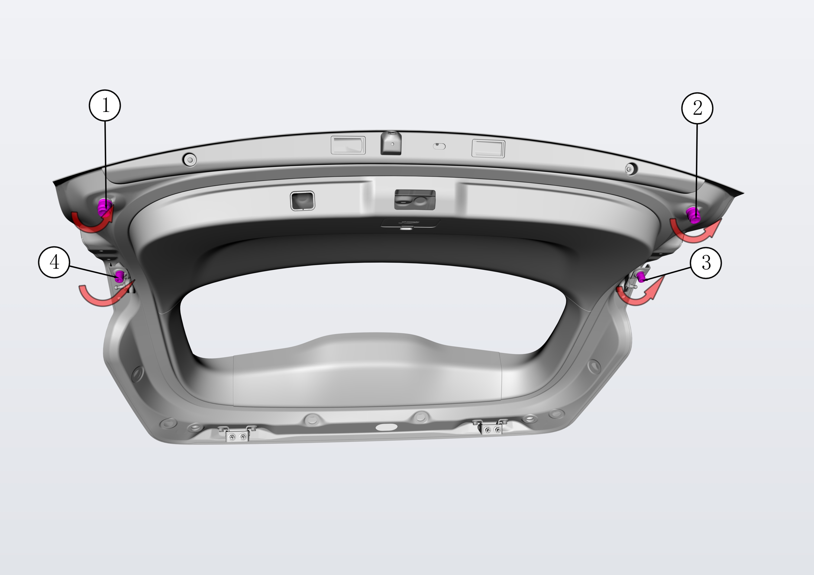
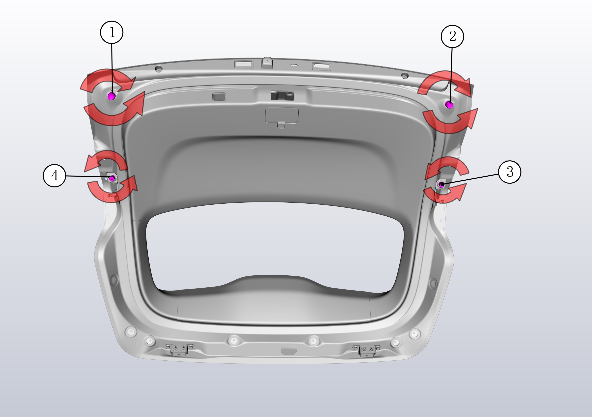

Снятие
Выкрутить буфер двери задка в направлении стрелки.

Установка
Установка в целом выполняется в обратном порядке, после завершения установки выполнить регулировку буфера двери задка.
Вращая буфер двери задка в направлении стрелки (при вращении по часовой стрелке сжатие буферной подушки уменьшается, при вращении против часовой стрелки сжатие буферной подушки увеличивается), можно отрегулировать уровень заподлицо двери задка относительно кузова.
